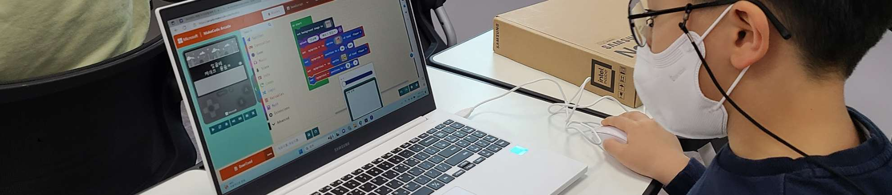

버튼, 조이스틱 등 입력장치와 OLED 출력장치를 연결해 나만의 러닝 점프 게임기를 만들며 피지컬 컴퓨팅을 체험합니다.
키트 구성품을 확인하세요.
게임기는 어떤 과학 원리로 작동하는지, 입력-출력 구조를 소개합니다.

입력장치와 출력장치의 종류, 디지털 신호의 개념을 학습합니다.
하드웨어를 조립하고, 미리 준비된 코드를 업로드합니다.
내가 만든 게임기로 직접 게임을 플레이하고, 작동 원리를 분석합니다.
피지컬 컴퓨팅 개념을 정리하고, 내 게임기를 소개합니다.
기본 키트만으로도 학습이 완결됩니다. 추가로 MakeCode Arcade를 활용하면, 블록 코딩으로 게임 로직을 수정하고 나만의 게임을 설계하는 코딩 확장 활동이 가능합니다.
※ MakeCode 미사용 시에도 하드웨어 조립과 작동 원리 분석만으로 학습 목표를 달성합니다.
MakeCode Arcade 바로가기 →